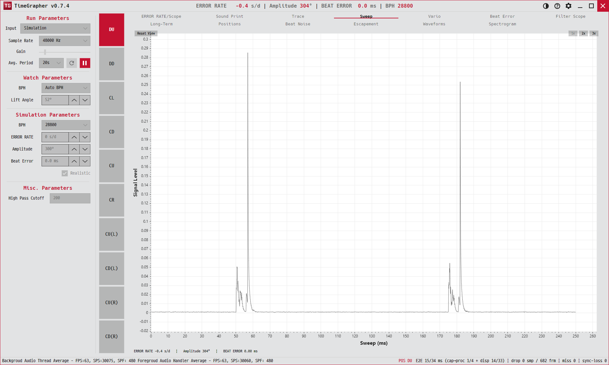

4. Sweep
여러 비트를 하나로 "접어" 한 비트 분량의 엔벨로프로 보여 줍니다. 오실로스코프의 스윕 화면과 비슷합니다.
Folds many beats into a single beat-length envelope — like an oscilloscope's swept trace.

용도 · Purpose
탈진기의 한 비트 움직임이 매번 같은 모양으로 반복되는지 봅니다. 모양이 안정적이면 동작이 일정하다는 뜻입니다.
Shows whether the escapement's single-beat motion repeats with the same shape each time — a stable shape means consistent action.
무엇이 보이나 · What's shown
- X축X axis
- Sweep (ms) — 0부터 창 길이까지(데이터 폭에 맞춰 자동 스케일).0 to the window length (auto-scales to the data width).
- Y축Y axis
- Signal Level — 접은 엔벨로프 한 줄.One folded-envelope trace.
- 참조줄Reference line
ERROR RATE X s/d | Amplitude Y° | BEAT ERROR Z ms— 현재 측정값.— current readings.
읽는 법 · How to read
- 안정: 프레임이 바뀌어도 같은 자리에 같은 모양 — 반복성이 좋은 탈진기.Stable: the same shape stays in the same place frame to frame — a repeatable escapement.
- 불안정: 모양이 좌우로 흔들리거나 번지면 타이밍 지터가 있는 것.Unstable: a shape that wobbles or smears indicates timing jitter.
- ⏸로 멈추면 한 비트의 프로파일을 정밀하게 살펴볼 수 있습니다.Pause to inspect a single beat's profile in detail.
한 비트 안의 A·C 충격 위치를 자세히 보려면 Beat Noise·Escapement를 함께 보세요.
To examine A/C impulse positions within a beat, pair this with Beat Noise / Escapement.